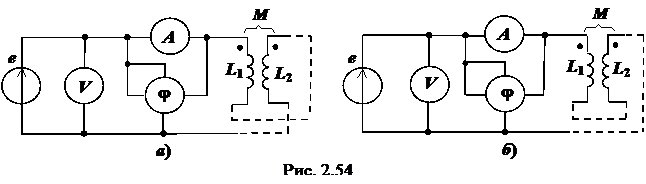

Определим взаимную индуктивность М системы двух фиксированных катушек.
При проведении опытов используют три измерительных прибора: вольтметр V, амперметр A и измеритель разности фаз φ (или ваттметр), а также источник синусоидального напряжения с ЭДС e(t).

Вначале катушки включим согласно (а), а затем встречно (б) (рис. 2.54).
Используя результаты измерений напряжения U, тока I и угла сдвига фаз φ между напряжением и током, определим полное и индуктивное сопротивления двух катушек по формулам:
Z = U/I, X = Zsinφ.
Определив полные сопротивления Z' (согласное включение) и Z'' (встречное включение), а также реактивные сопротивления X' и X'' цепей:
находим их эквивалентные индуктивности L' и L'':
где ω − угловая частота синусоидального напряжения.
Вычтя из бóльшего индуктивного сопротивления меньшее, т. е. и поделив полученную разность ΔХ на 4ω, получим выражение искомой взаимной индуктивности двух индуктивно связанных катушек, т.е.
. (2.98)
П р и м е ч а н и е. При сборке схем необязательно уточнять вид соединения катушек, его можно определить, сравнив, например, полученные в опытах значения токов: если ток I' > I'', то в первом
опыте катушки были включены встречно, а во втором − согласно; если же I' < I'' , то в первом опыте катушки были включены согласно, а во втором − встречно.